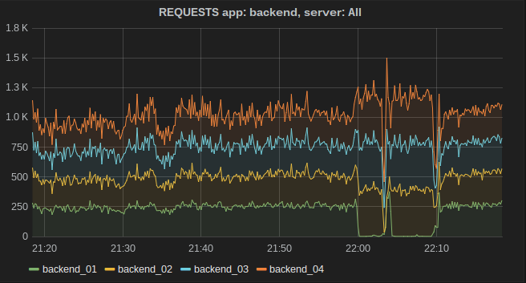

<div class="reveal">
  <!-- Any section element inside of this container is displayed as a slide -->
  <div class="slides">
    <section>
      
      <h1>Stats and Metrics</h1>
      <h3>The more you know</h3>
      <p>
        <small>Created by <a href="https://www.gavinmogan.com">Gavin Mogan</a> / <a href="https://web.archive.org/web/20221218113549/http://twitter.com/halkeye">@halkeye</a></small>
      </p>
    </section>
    <section>
      <h2>Better to know, than not to know</h2>
      <ul>
        <li>"How long has this been happening?"</li>
        <li>"How many concurrent connections before cpu starts to spin out of control?"</li>
        <li>"How long to videos take to process?"</li>
        <li>"How many videos are uploaded after Joe does one of his announcements?"</li>
      </ul>
    </section>
    <!-- Example of nested vertical slides -->
    <section>
      <h2>Many many components</h2>
      <div style="float: right">
        
      </div>
      <div>Almost all can be used separately, but I think 1 is required, two are nice to have, and 1 is just slick.</div>
    </section>
    <section>
      <h2>Components</h2>
      <ul>
        <li>
          Graphite
          <ul>
            <li>Stats Storage Engine. Numeric values only. Has aggregation, rollups, tons of ways to pull out numbers</li>
          </ul>
        </li>
        <li>
          Collectd
          <ul>
            <li>Regularly (10s) collect system information</li>
          </ul>
        </li>
        <li>
          Statsd
          <ul>
            <li>Collect data from apps. # of logins, uploads, etc</li>
          </ul>
        </li>
        <li>
          Grafana
          <ul>
            <li>SO PRETTY! ENHANCE! ENHANCE!</li>
          </ul>
        </li>
      </ul>
    </section>
    <section>
      <h2>Collectd</h2>
      <ul>
        <li>Collects stats at regular intervals (10s by default)</li>
        <li>Out of the box, system information</li>
        <li>Can write to graphite</li>
        <li>Can collect custom info, but I’ve found it easier/better to go graphite directly.</li>
      </ul>
    </section>
    <section>
      <h2>Statsd</h2>
      <ul>
        <li>Daemon that collects stat pushes at it</li>
        <li>Runs over UDP so shouldn’t block your app</li>
        <li>
          Many stat options:
          <ul>
            <li>Timings (how long a query took)</li>
            <li>Absolute values (number of results returned)</li>
            <li>Incremental Values (every login)</li>
          </ul>
        </li>
        <li>
          Many backend options
          <ul>
            <li>Graphite</li>
            <li>Others</li>
          </ul>
        </li>
        <li>Client libraries in pretty much every language</li>
      </ul>
    </section>
    <section>
      
      <p>Demos later. Its very pretty</p>
      <a href="http://play.grafana.org/dashboard/db/templated-graphs-nested">http://play.grafana.org/dashboard/db/templated-graphs-nested</a>
    </section>
    <section>
      <h2>I wanna see some stuff!</h2>
      <p>Lets go!</p>
      
      <aside class="notes">
        http://localhost:6003/
        http://localhost:6004/dashboard/db/habitat-media
        http://localhost:6080/habitat_media/media/1
        http://play.grafana.org/dashboard/db/templated-graphs-nested
        http://play.grafana.org/dashboard/db/annotations
        echo "local.random.diceroll 4 `date +%s`" | nc -q0 ${SERVER} ${PORT}
      </aside>
    </section>
  </div>
</div>
